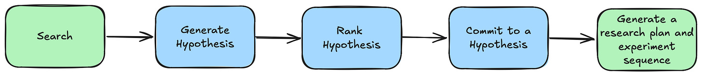
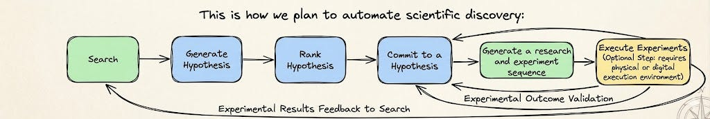

Part 3 of Building Seesaw: Agentic AI for AI Safety Research
Building Seesaw: Agentic AI to do AI Safety Research, Part 3
A deep-dive into the design of Scout - the research planning and hypothesis generation agent
In the last post, I covered the 3 papers that shaped Seesaw’s architecture: Patchscopes, MAIA, and Anthropic’s alignment auditing work and introduced a new input surface for the system. In this post, I go into the design of each agent, starting with Scout.
If you’re here for the first time, I invite you to review the earlier part of this series here, where I am documenting an Agentic AI system to do AI Safety research with the ultimate aim of it being able to audit several AI models. Part 1 and Part 2 can be found here.

First, let’s quickly revisit the input surface, since it’s directly relevant to how Scout is designed. The input to the system and therefore to Scout since it is the first agent in the pipeline, is as follows:
MODEL = “gpt2”
QUESTION = “Does GPT-2 exhibit gender bias when predicting pronouns for occupation words like ‘nurse’ or ‘engineer’?”
MODE = None # None → Scout infers. Or: “circuit_analysis” | “factual_recall”And the output is a detailed research plan to be passed to Lens to be executed. Below is a glimse of the structure of this research plan:
# Research Plan
## Hypothesis Candidates
- Candidate 1 ✅ CHOSEN
- Candidate 2 rejected
- Candidate 3 rejected
## Committed Hypothesis
## Falsification Condition
## Expected Findings
## Background
## Key Papers
## Experiment Sequence
1. Experiment 1
2. Experiment 2
...For the very first iteration of Scout that I planned, it simply took a research question, did a web search (and arxiv) of the relevant and output an unstructured markdown. Okay for a first test, but at that point the output is hardly better than a naive prompt, how does using an agent make it better? This comes down to the core components of a good research plan as opposed to a literature summary, which are as follows:
A specific mechanistic claim: eg: “attention heads in layers X-Y attend from the pronoun position to the occupation token and causally mediate the gender prediction”
A falsification condition: what single result would prove the hypothesis wrong
A commitment: pick one hypothesis, design experiments to test it, don’t hedge across five possibilities
Pipeline
Scout constructs a research plan systematically in 5 steps:
Search for relevant literature pertaining to the question.
Create Candidate Hypotheses from the assembled literature.
Rank the hypothesis ranking by criteria (in this case it’s testability)
Commit to a final hypothesis
Product an experiment sequence from the registered tools available to Lens or deem the tools as insufficient. (Note: there are agentic systems where agents can function in complete isolation. But in this case it works for Scout to know which tools are being used by Lens because it needs to produce a plan that is possible to be executed by Lens i.e to cooperate with it).
Implementation
Finally, we get to the implementation of Scout. For this version, I’ve gone with a ReAct agent: Reasoning + Acting which is an agent pattern where thinking and doing are interleaved in a loop, rather than planning everything upfront or acting blindly.
Using ReAct for Scout in v0 is counterintuitive, and I’ll acknowledge that. The current version runs a roughly linear search: arXiv queries, optional web search, optional scrape. For this, a workflow would be cheaper and faster. Honestly, if this were the end goal, that’s exactly what I’d use.
But it isn’t. As questions, modes, and models get more complex, Scout won’t just retrieve it will chase leads: find a paper, scrape its appendix for specific ablation numbers, search for papers that cite it, decide when it has enough plus also engage in deep research sessions. That’s discovery, and discovery needs an agent. So I’m accepting the tradeoff now to avoid rebuilding later. The architecture is intentional Scout is designed for where Seesaw is going, not for it’s ephemeral current version.
For the implementation, I use langchain with it’s easy to initiate ReAct implementation. Let’s walk through all of the components that are needed for the setup of Scout.
Schemas
Scout has two levels of Schemas to denote what it produces at intermeidate and final steps. The first level captures the hypothesis generation step; before Scout commits to anything:
class CandidateHypothesis(BaseModel):
hypothesis: str
falsification_condition: str
testability_score: int # 1–5
literature_support: str
weakness: str
class HypothesisRanking(BaseModel):
candidates: list[CandidateHypothesis]
chosen_index: int
reasoning: strThe second level is the full plan that Lens consumes:
class ResearchPlan(BaseModel):
research_question: str
model_name: str
mode: Literal["circuit_analysis", "factual_recall"]
mode_inferred: bool
hypothesis: str
falsification_condition: str
expected_findings: str
rejected_hypotheses: list[str]
background: str
key_papers: list[str]
experiment_sequence: list[ExperimentSpec]We need two levels of schemas to handle the complexity of the outputs at every level and to ensure that Scout generates outputs that are structured and reliable. Asking Scout to generate candidates, rank them, commit to one and designs a full experiment sequence in a single structured output is too much , the extraction falls apart. Splitting it gives each call a narrow scope: first “what are the competing hypotheses and which is most testable”, then “design experiments for the committed one.”
The rejected_hypotheses field will be very useful for Quill - the critique agent when writing it’s critique report/review. it’s how the system can say “this alternative explanation wasn’t ruled out by the experiments.”
Tools
Scout has 3 tools which mostly help it to access and search the web for relevant literature which becomes the basis/source information for the rest of the steps, it’s a crucial step for ensuring that it has access to latest high-quality information/methods from real researchers.
@tool
def search_arxiv(query: str, max_results: int = 6) -> str:
"""Search arXiv for mechanistic interpretability and AI safety papers."""
client = arxiv.Client()
search = arxiv.Search(query=query, max_results=max_results,
sort_by=arxiv.SortCriterion.Relevance)
results = []
for paper in client.results(search):
authors = ", ".join(a.name for a in paper.authors[:3])
results.append(
f"**{paper.title}** — {authors} ({paper.published.year})\n"
f"{paper.summary[:500]}...\n"
f"URL: {paper.entry_id}"
)
return "\n---\n".join(results)
@tool
def search_web(query: str, limit: int = 4) -> str:
"""Search for blog posts, TransformerLens examples, implementation references."""
app = FirecrawlApp(api_key=FIRECRAWL_API_KEY)
response = app.search(query, limit=limit)
...
@tool
def scrape_url(url: str) -> str:
"""Get full content of a specific URL."""
app = FirecrawlApp(api_key=FIRECRAWL_API_KEY)
res = app.scrape_url(url, formats=["markdown"])
return markdown[:6_000] search_arxiv handles structured academic queries: known paper titles, keyword searches, clean abstracts. search_web via Firecrawl catches what arXiv misses: Neel Nanda's blog posts (ideally this should become a database of high quality AI Safety research websites), TransformerLens tutorial notebooks, community write-ups of circuit findings. scrape_url is the follow-through, once Scout finds a relevant URL it can pull the full content of the URL. An immediate improvement I need to make is to consume the entire arxiv paper and not just the summary.
System Prompt
The system prompt is dynamic: build_system_prompt(MODEL, QUESTION, MODE) generates a different prompt for each run. The model name, research question, and inferred mode are all baked in, so Scout knows what architecture it’s investigating and what class of tools are relevant. Note to self for the future: the tool registry needs to be shared and dynamic.
You are Scout, an experimental design agent specialised in mechanistic interpretability.
Your job: design a scientific investigation plan that Lens can execute to answer the research question.
The quality of the entire Seesaw pipeline is bounded by the quality of your plan.
## Inputs
- Model: `{model}`
- Question: {question}
- Mode: {mode_instruction}
## Workflow
### Step 1 — Search (do this first)
Run 2-3 targeted arXiv searches to find existing circuit-level work on this question.
Look for papers that have characterised this behaviour in GPT-2 or similar models.
Note: what has already been found, and what remains open.
### Step 2 — Generate candidate hypotheses
Based on your search, generate 2-3 competing mechanistic hypotheses.
Each must be:
- Specific: name the layers, components, or token positions involved
- Falsifiable: state exactly what result would disprove it
- Testable: Lens must be able to test it with available tools
Do NOT commit to one yet. Generate all candidates first.
Good hypotheses compete — they make different predictions about what Lens will find.
### Step 3 — Summarise
After searching and generating candidates, write a summary covering:
- The 2-3 candidate hypotheses with their falsification conditions
- Which hypothesis you believe is most testable and why
- The key papers that ground this investigation
- What the experiment sequence should look like
The ranking and final plan will be extracted from your summary in a structured step.
## Hypothesis quality bar
Weak: "GPT-2 exhibits gender bias in occupation contexts"
Strong: "Attention heads in layers 7-9 of GPT-2 Small attend from the pronoun position
to the occupation token and causally mediate the gender prediction, such that
ablating the top-3 heads in this range reduces logit diff (she - he) by > 30%"
The difference: the strong hypothesis names the mechanism, the layers, and the measurable threshold.
## Experiment ordering by mode
circuit_analysis: attention_pattern → activation_patching → ablation → direct_logit_attribution → patchscope_probe
factual_recall: logit_lens → direct_logit_attribution → activation_patching → patchscope_probe
## Available Lens tools
| Tool | Measures | Correlational or causal? |
|---|---|---|
| `logit_lens` | Layer-by-layer prediction evolution | Correlational |
| `attention_pattern` | Which tokens attend to which | Correlational |
| `ablation` | Effect of silencing a component | Causal |
| `activation_patching` | Which layer+position carries the signal | Causal |
| `direct_logit_attribution` | Per-head contribution to final logit | Decomposition |
| `patchscope_probe` | What a hidden state encodes in plain English | Semantic |
## Prompt generation
Generate 4-8 prompts per experiment. Include symmetric pairs and at least one control.
Keep prompts under 30 tokens (GPT-2 context constraint).Agent Loop
And here’s the instantiation of the agent itself.
llm = ChatAnthropic(
model="claude-opus-4-5",
temperature=1,
max_tokens=8_000,
)
scout = create_react_agent(
model=llm,
tools=[search_arxiv, search_web, scrape_url],
checkpointer=MemorySaver(),
prompt=SystemMessage(content=SYSTEM_PROMPT),
)The temperature is set to 1 for the search phase. Scout needs to generate genuinely competing hypotheses if temperature is low, the candidates end up as slight variations on the same claim, and the ranking step has nothing real to choose between. MemorySaver as the checkpointer is what makes the two-step extraction possible. After the ReAct loop finishes, you can read the agent’s final message out of state and pass it to a separate structured extraction call:
state = scout.get_state(config).values
messages = state.get("messages", [])
# grab Scout's last substantive message
scout_summary = next(
msg.content for msg in reversed(messages)
if isinstance(msg.content, str) and msg.content.strip()
)
# extract HypothesisRanking from it
ranking: HypothesisRanking = llm.with_structured_output(HypothesisRanking).invoke(
f"Extract candidates and rank by testability.\n\n{scout_summary}"
)For design iteration 0, the agent runs once (not much use of an agent but this will change). The structured extractions read from its state, allowing there to be a clean separation between the open-ended reasoning phase and the structured output phase. As for MaxSteps, LangGraph's default recursion limit is 25 steps. For the current linear search that's more than enough, a typical run uses maybe 5-8 tool calls. But for deep research sessions, I recommend setting it explicitly so the limit is a conscious decision. And that’s it!
Validation: Gender Bias in GPT-2
No use designing an agentic system when you can’t measure it’s progress. So, this is why you need validation/eval tasks. One way to measure the progress of Scout is to give it papers and their associated hypothesis that measure a real task and compare the generated hypothesis with those in the paper. the quality of the “ground truth” research is super important here. The validation below is based on the paper Vig et al. (2020) where the ground truth hypothesis is that Sparse attention head effects in mid-layers mediate the occupation→pronoun prediction
The question I gave Scout:
model: gpt2
question: Does GPT-2 exhibit gender bias when predicting pronouns
for occupation words like 'nurse' or 'engineer'?
mode: None
You can see the output of Scout here. Wang et al. ablated heads and measured logit diff. Meng et al. did causal tracing with activation patching. The hypotheses are backed by evidence, not just attention pattern visualizations. That matters because you’re comparing Scout’s hypothesis against a claim that was actually tested, not just proposed.
The comparison isn’t string matching. What you’re checking is whether Scout identified the right structure: the right layer range, the right component type (attention vs MLP), and the right mechanism (copying, mediation, storage). A Scout output that says “mid-layer attention heads in layers 6-9 mediate the gender prediction via attention from pronoun to occupation position” is a pass against Vig et al. — even if the exact layers differ by one. A Scout output that says “MLP layers encode the gender signal” is a fail, because it got the component type wrong.
Three dimensions to score:
Component type — attention heads vs MLPs vs embeddings. Binary. Getting this wrong is a fundamental miss.
Layer range — did Scout identify roughly the right depth? ±2 layers is reasonable tolerance given that circuit boundaries are fuzzy.
Mechanism — did Scout name the right operation? Copying, mediation, storage, retrieval are all distinct. This is the hardest to score automatically.
The scoring isn’t automated yet — for v0 it’s a manual read. That’s fine. The point isn’t a leaderboard; it’s a sanity check that Scout is generating mechanistically coherent hypotheses before Lens runs any experiments.
For the gender bias task: Scout committed to mid-layer attention heads in layers 5-8 mediating the pronoun prediction via attention from the final position back to the occupation token. Vig et al. found sparse attention head effects concentrated in a small part of the network. Component type: ✅. Layer range: ✅ (their peak effects are in a similar range). Mechanism: ✅. That’s a pass on all three dimensions.
Validation Analysis: GPT-2 Gender Bias
Instead of immediately writing a plan, Scout generated three competing hypotheses:
H1: Mid-Layer Attention Head Mediation (testability: 5/5) — chosen
Gender bias is primarily mediated by attention heads in layers 5-8 of GPT-2-small that attend from the pronoun prediction position back to the occupation token. These heads read the occupation embedding and write a direction to the residual stream that increases logit(she) for female-stereotyped occupations and logit(he) for male-stereotyped occupations.
H2: Early MLP Stereotype Encoding (testability: 4/5) — rejected
Gender bias is primarily encoded in MLP layers 0-4, which transform occupation tokens into gender-coded representations at the occupation position itself. This ‘pre-encoded’ gender signal propagates forward via residual connections, with later layers simply copying it.
H3: Late-Layer Name Mover Analogy (testability: 4/5) — rejected
By analogy to the IOI circuit (Wang et al. 2022), gender bias operates via specialized ‘gender mover’ heads in layers 9-11. These copy gender information from the occupation to the final position, while earlier ‘backup’ heads provide redundancy.
Then Scout ranked them and committed to H1. The rejected hypotheses don’t disappear they go into a rejected_hypothesesfield in the final plan. Quill reads that list when writing the report.
The reasoning for choosing H1 is actually interesting:
Unlike H2 which requires interpreting logit lens trajectories, or H3 which depends on identifying compositional structure, H1’s tests yield direct numerical outputs. The 20% threshold provides a concrete, measurable criterion.
That’s Scout reasoning about testability, not just literature recall. It’s explicitly saying “I’m choosing this hypothesis because its falsification condition is operationally clear.”
The Falsification Condition
This is the most important field in the output:
H1 is false if:
ablating top-3 heads in layers 5-8 reduces |logit(she) - logit(he)|
by <20% on stereotyped prompts
OR
attention patterns show heads at pronoun position do NOT attend
strongly (<0.1 weight) to occupation token
That’s a yes/no question with a number attached. Lens runs the ablation, Quill checks the threshold, and the report says either “the hypothesis held” or “the hypothesis was falsified and here’s why.” Pretty concrete for a good research plan.
The Experiment Sequence
Scout designed five experiments:
Attention pattern analysis: measure attention weights from final position to occupation token across all layers; focus on 5-8
Activation patching: layer × position grid with neutral baseline “The person said that”; find where the gender signal lives
Ablation: mean-ablate heads in layers 5-8; threshold is >20% reduction in logit diff
Direct logit attribution: decompose logit(she) - logit(he) by head; top contributors should be in layers 5-8
Patchscope probe: extract hidden state at occupation position, patch into diagnostic scaffold
The patchscope probe is the most interesting. Scout set the target prompt to:
"The gender typically associated with this profession is"
And told Lens what to look for:
Whether the patched representation causes the model to predict ‘female’/’male’ or ‘she’/’he’ — indicating explicit gender encoding vs. implicit bias
That target prompt is Scout’s responsibility. Lens can’t infer it. If Scout just said “run a patchscope probe,” Lens would have to guess — and it would probably guess wrong. The whole point of the PatchscopeParams schema is that Scout thinks about what the decoding scaffold should be before handing off.
This experiment also has a second purpose: it’s designed to distinguish H1 from the rejected H2. If gender is strongly encoded at the occupation position in early layers, that supports H2 over H1. Scout built in the test for its own alternative.
What’s Still Missing
Scout has a known blind spot: confirmation bias. Both MAIA and the Anthropic auditing paper flag this as the primary failure mode of agentic interpretability systems. The agent generates a hypothesis, finds supporting evidence, and designs experiments weighted toward confirming what it already believes. The falsification condition is technically there, but the sequence is tilted.
The fix is an adversarial Scout pass: after Lens returns results, prompt Scout again — not to synthesize, but to attack its own hypothesis. “Here are the results. What do these results NOT prove? What alternative explanation is still consistent with this data?”. Also, another point for sticking to the ReAct architecture which can perform as many loop as required depending on the problem.
Also, remember this validation is on a problem that exists with a ground truth, which makes it super limited. If Scout has to do real-research then it has to engage in discovery and be validated on basis on uncertainty. This is where HITL (Human in the loop) checkpoints will become quite important.
Actions for Scout
Dynamically share the tool registry of Lens with Scout
Use the ReAct agent to its full capacity by adding in loops
Integrate Deep Research
Adversarial Scout pass
Enrich the validation set
Add HITL checkpoints

And that’s it. For the next post, we take a look at Lens in a similar way (we will take this GPT-2 validation example and examine what Lens will do to execute it and the results produced). Once v0 analysis is finished, I’ll be putting v0 into production as a real system to be used in different modes and continue to build and iterate from there. Stay tuned!
Originally published on Mind & AI on Substack.